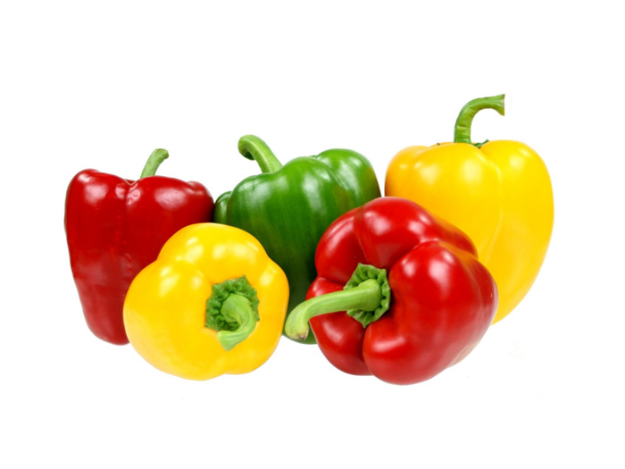

Ớt Chuông
Có tên khoa học là Capsicum Annum L. Gọi nó là ớt Đà Lạt bởi đây chính là nơi “khai sinh” ra loại ớt này ở nước ta. Nó có xuất hiện trong các gian bếp gia đình, nhà hàng trên thế giới từ rất lâu. Tuy nhiên nếu nói đến ở Việt Nam, thì Đà lạt chính là nơi đầu tiên trồng được loại ớt này và luôn có chất lượng ổn định.
Đặc điểm của loại ớt này chính là không cay như ớt truyền thống. Mà có vị ngọt, hơi hăng nên còn được gọi là ớt ngọt. Loại ớt này có nhiều màu sắc khác nhau như: đỏ, xanh, vàng, cam, tím…Nhưng thông dụng hơn cả chính là ớt xanh, ớt đỏ.
Tác dụng làm đẹp của ớt xanh, ớt đỏ
* Do trong ớt ngọt có nhiều vitamin như đã nói nên rất tốt cho da và quá trình làm đẹp. Nó sẽ giúp da mịn màng, chống lão hóa.
* Ớt đỏ có lượng vitamin C nhiều nhất trong các loại nên chống nhăn da. Trong đó còn có nhiều Beta Carotin giúp ngăn ngừa lão hóa da và chống lại sự tấn công của các gốc tự do.
* Ớt xanh thì giúp bảo vệ màng Collagen do có nhiều vitamin A hơn. Bên cạnh đó còn chống lại quá trình oxy hóa da, ngăn ngừa ung thư da và lão hóa sớm.
* Với những công dụng tuyệt vời đó mà các bà nội trợ luôn tìm mua ớt xanh, ớt đỏ Đà Lạt khi đi chợ.